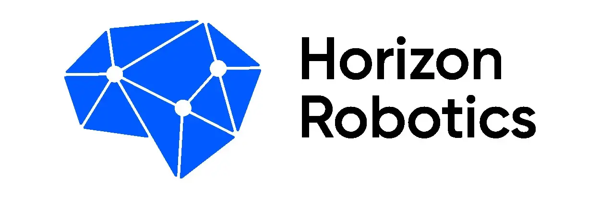
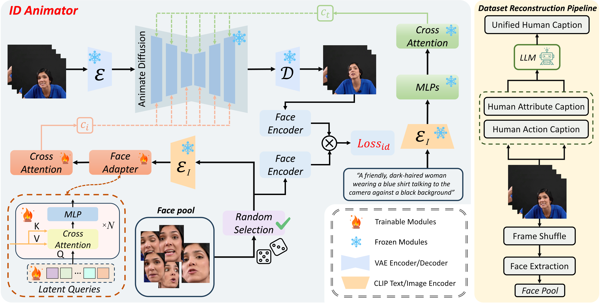

Verify · Reflect · Evolve
DeepSearch World
DeepSearch-World: Self-Distillation for Deep Search Agents in a Verifiable Environment
EMNLP 2026
I am currently a Ph.D. student in Computer Science and Engineering at HKUST, advised by Prof. Qifeng Chen. Previously, I obtained my M.S. from USTC, working with Prof. Jie Zhang and Chengjun Xie. I received my B.Eng. degree from Xiamen University in 2022, where I conducted research at the MOCOM Lab under the guidance of Prof. Yongxuan Lai.
My research sits at the intersection of agentic world models, video intelligence, and self-improving agents. I am interested in systems that perceive dynamic worlds, take purposeful actions, verify their outcomes, and turn experience into better future behavior.
Current question: Can a world model become the environment, memory, and verifier an agent needs to recursively improve?



